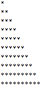

Taller #3 de PSeInt
Aquí te presento el taller #3: Ciclos
1. Realizar la siguiente figura por medio del ciclo Para:

Proceso app Definir nombre Como Caracter; Definir apellido Como Caracter; Escribir "Digite su nombre"; Leer nombre; Escribir "Digite su apellido"; leer apellido; Limpiar Pantalla; Escribir nombre; Escribir apellido; FinProceso
2. Realizar un programa el cual solicite su nombre, apellidos, edad y estatura.

Proceso segundaApp Definir nombre Como Caracter; Definir apellido Como Caracter; Definir edad Como Entero; Definir estatura Como Real; Escribir "Digite su nombre"; Leer nombre; Escribir "Digite su apellido"; Leer apellido; Escribir "Digite su edad"; Leer edad; Escribir "Digite su estatura"; Leer estatura; Limpiar Pantalla; Escribir nombre; Escribir apellido; Escribir edad; Escribir estatura; FinProceso
3. Realizar un programa el cual solicite su nombre y apellidos, también debe capturar nombre y
apellidos de su padre y madre. Al finalizar debe imprimir en pantalla el siguiente mensaje "Yo
[Nombre Completo], soy hijo de [Nombre de la Madre] y [Nombre del Padre].

Proceso terceraApp Definir nombre Como Caracter; Definir apellido Como Caracter; Definir nombrePadre Como Caracter; Definir apellidoPadre Como Caracter; Definir nombreMadre Como Caracter; Definir apellidoMadre Como Caracter; Escribir "Digite su nombre"; Leer nombre; Escribir "Digite su apellido"; Leer apellido; Escribir "Digite el nombre de su padre"; Leer nombrePadre; Escribir "Digite el apellido de su padre"; Leer apellidoPadre; Escribir "Digite el nombre de su madre"; Leer nombreMadre; Escribir "Digite el apellido de su madre"; Leer apellidoMadre; Limpiar Pantalla; Escribir "Yo ", nombre, " ", apellido, " soy hijo de ", nombreMadre, " ", apellidoMadre, " y ", nombrePadre, " ", apellidoPadre; FinProceso
4. Se requiere un programa que pueda crear la tabla de multiplicar del número que el usuario indique por
medio del ciclo Para; esta debe ser impresa del 1 al 10. Ejemplo, si el usuario indica que desea crear
la tabla del 5, entonces el resultado debería ser el siguiente:.

Proceso cuartaApp Definir capital Como Caracter; Definir pais Como Caracter; Escribir "Digite el nombre de una ciudad capital"; Leer capital; Escribir "Digite el nombre del país al que pertenece esa capital"; Leer pais; Limpiar Pantalla; Escribir "La ciudad de ", capital, " es la capital del país ", pais; FinProceso
5. Utilizando el ciclo que usted desee, crear un menú de ejecución infinita hasta que el usuario desee
terminar dicho ciclo.

Proceso quintaApp Definir nombreMascota Como Caracter; Definir edad Como Caracter; Definir tipo Como Caracter; Definir nombrePropietario Como Caracter; Escribir "Digite el nombre de la mascota"; Leer nombreMascota; Escribir "Digite la edad de la mascota"; Leer edad; Escribir "Digite la raza de la mascota"; Leer tipo; Escribir "Digite el nombre completo del dueño de la mascota"; Leer nombrePropietario; Limpiar Pantalla; Escribir nombreMascota, " es un(a) ", tipo, " el cual, tiene ", edad, " año(s) de edad y ", nombrePropietario, " es actualmente su dueño(a)."; FinProceso
6. Se está creando una aplicación que va a estar conectada con un prototipo que permita almacenar
contactos telefónicos en el dispositivo. Para ello cada contacto debe contener nombre completo, teléfono
y organización. Se requiere que la aplicación permita añadir 3 contactos verificando que el número no
esté almacenado, buscar contactos almacenados y eliminar contactos si el usuario lo requiere. Recuerde
que el sistema debe terminar cuando el usuario así lo indique.
Proceso sextoEjercicio Definir nombre, telefono, organizacion, buscar, verificarTelefono Como Caracter; Definir nombre2, telefono2, organizacion2 Como Caracter; Definir nombre3, telefono3, organizacion3 Como Caracter; Definir opcion, contador Como Entero; contador <- 0; telefono <- ""; telefono2 <- ""; telefono3 <- ""; Escribir "Agenda de contactos"; Escribir "1. Añadir contacto"; Escribir "2. Buscar contacto"; Escribir "3. Eliminar contacto"; Escribir "4. Salir de la aplicación"; Leer opcion; Mientras opcion <> 4 Hacer Segun opcion Hacer 1: Si contador < 3 Entonces Escribir "Digite el número de teléfono del contacto"; Leer verificarTelefono; Si verificarTelefono <> telefono Y verificarTelefono <> telefono2 Y verificarTelefono <> telefono3 Y contador = 0 Entonces telefono <- verificarTelefono; Escribir "Digite el nombre del contacto:"; Leer nombre; Escribir "Digite la organización a la que pertenece el contacto:"; Leer organizacion; contador <- contador + 1; Escribir "Registro exitoso"; SiNo Si verificarTelefono <> telefono Y verificarTelefono <> telefono2 Y verificarTelefono <> telefono3 Y contador = 1 Entonces telefono2 <- verificarTelefono; Escribir "Digite el nombre del contacto:"; Leer nombre2; Escribir "Digite la organización a la que pertenece el contacto:"; Leer organizacion2; contador <- contador + 1; Escribir "Registro exitoso"; SiNo Si verificarTelefono <> telefono Y verificarTelefono <> telefono2 Y verificarTelefono <> telefono3 Y contador = 2 Entonces telefono3 <- verificarTelefono; Escribir "Digite el nombre del contacto:"; Leer nombre3; Escribir "Digite la organización a la que pertenece el contacto:"; Leer organizacion3; contador <- contador + 1; Escribir "Registro exitoso"; SiNo Escribir "Ese número de teléfono ya se encuetra registrado"; FinSi FinSi FinSi SiNo Escribir "No se pueden registrar más de 3 contactos"; FinSi 2: Escribir "Digite el telefono del contacto que quiere buscar"; Leer buscar; Si buscar = telefono Entonces Escribir "Nombre: ", nombre; Escribir "Teléfono: ", telefono; Escribir "Organización: ", organizacion; SiNo Si buscar = telefono2 Entonces Escribir "Nombre: ", nombre2; Escribir "Teléfono: ", telefono2; Escribir "Organización: ", organizacion2; SiNo Si buscar = telefono3 Entonces Escribir "Nombre: ", nombre3; Escribir "Teléfono: ", telefono3; Escribir "Organización: ", organizacion3; SiNo Escribir "Ese contacto no se encuentra registrado"; FinSi FinSi FinSi 3: Si nombre = "" Y nombre2 = "" Y nombre3 = "" Entonces Escribir "No hay contactos registrados"; SiNo Escribir "Digite el telefono del contacto que desea eliminar"; Leer buscar; Si buscar = telefono Entonces nombre <- ""; telefono <- ""; organizacion <- ""; contador <- contador - 1; Escribir "El contacto ha sido eliminado"; SiNo Si buscar = telefono2 Entonces nombre2 <- ""; telefono2 <- ""; organizacion2 <- ""; contador <- contador - 1; Escribir "El contacto ha sido eliminado"; SiNo Si buscar = telefono3 Entonces nombre3 <- ""; telefono3 <- ""; organizacion3 <- ""; contador <- contador - 1; Escribir "El contacto ha sido eliminado"; SiNo Escribir "Ese contacto no se encuentra registrado"; FinSi FinSi FinSi FinSi De Otro Modo: Escribir "La opción elegida no existe"; FinSegun Escribir ""; Escribir "Agenda de contactos"; Escribir "1. Añadir contacto"; Escribir "2. Buscar contacto"; Escribir "3. Eliminar contacto"; Escribir "4. Salir de la aplicación"; Leer opcion; FinMientras FinProceso
7. El parqueadero "El guardián" presta sus servicios de parqueadero nocturno para los usuarios del
barrio y requiere una aplicación que permita registrar los vehículos que se cuidan en estas
instalaciones. Se sugiere que el parqueadero tenga los atributos del vehículo como son, placa y marca, y
los datos del cliente como son nombre completo y número de teléfono. Para cada vehículo se debe permitir
la opción de ingresar al parqueadero, retirar del parqueadero y consultar si un vehículo se encuentra en
el parqueadero. Recuerde que el sistema debe terminar cuando el usuario así lo indique. Tenga en
presente que el parqueadero solo puede almacenar máximo 5 vehículos.
Proceso septimoEjercicio Definir nombre, telefono, verificarPlaca Como Caracter; Definir nombre2, telefono2 Como Caracter; Definir nombre3, telefono3 Como Caracter; Definir nombre4, telefono4 Como Caracter; Definir nombre5, telefono5 Como Caracter; Definir placa, marca Como Caracter; Definir placa2, marca2 Como Caracter; Definir placa3, marca3 Como Caracter; Definir placa4, marca4 Como Caracter; Definir placa5, marca5 Como Caracter; Definir ingresar, ingresar2, ingresar3, ingresar4, ingresar5 Como Logico; Definir opcion, contador Como Entero; ingresar <- Falso; ingresar2 <- Falso; ingresar3 <- Falso; ingresar4 <- Falso; ingresar5 <- Falso; contador <- 0; placa <- ""; placa2 <- ""; placa3 <- ""; placa4 <- ""; placa5 <- ""; Escribir "Parqueadero El Guardián"; Escribir "1. Registrar Vehículo"; Escribir "2. Ingresar al parqueadero"; Escribir "3. Retirar del parqueadero"; Escribir "4. Consultar si el vehículo se encuentra en el parqueadero"; Escribir "5. Salir de la aplicación"; Leer opcion; Mientras opcion <> 5 Hacer Segun opcion Hacer 1: Si contador < 5 Entonces Escribir "Digite la placa del vehículo que desea registrar"; Leer verificarPlaca; Si verificarPlaca <> placa Y verificarPlaca <> placa2 Y verificarPlaca <> placa3 Y verificarPlaca <> placa4 Y verificarPlaca <> placa5 Y contador = 0 Entonces placa <- verificarPlaca; Escribir "Digite la marca"; Leer marca; Escribir "Digite el nombre completo del cliente"; Leer nombre; Escribir "Digite el teléfono del cliente"; Leer telefono; contador <- contador + 1; Escribir "Registro exitoso"; SiNo Si verificarPlaca <> placa Y verificarPlaca <> placa2 Y verificarPlaca <> placa3 Y verificarPlaca <> placa4 Y verificarPlaca <> placa5 Y contador = 1 Entonces placa2 <- verificarPlaca; Escribir "Digite la marca"; Leer marca2; Escribir "Digite el nombre completo del cliente"; Leer nombre2; Escribir "Digite el teléfono del cliente"; Leer telefono2; contador <- contador + 1; Escribir "Registro exitoso"; SiNo Si verificarPlaca <> placa Y verificarPlaca <> placa2 Y verificarPlaca <> placa3 Y verificarPlaca <> placa4 Y verificarPlaca <> placa5 Y contador = 2 Entonces placa3 <- verificarPlaca; Escribir "Digite la marca"; Leer marca3; Escribir "Digite el nombre completo del cliente"; Leer nombre3; Escribir "Digite el teléfono del cliente"; Leer telefono3; contador <- contador + 1; Escribir "Registro exitoso"; SiNo Si verificarPlaca <> placa Y verificarPlaca <> placa2 Y verificarPlaca <> placa3 Y verificarPlaca <> placa4 Y verificarPlaca <> placa5 Y contador = 3 Entonces placa4 <- verificarPlaca; Escribir "Digite la marca"; Leer marca4; Escribir "Digite el nombre completo del cliente"; Leer nombre4; Escribir "Digite el teléfono del cliente"; Leer telefono4; contador <- contador + 1; Escribir "Registro exitoso"; SiNo Si verificarPlaca <> placa Y verificarPlaca <> placa2 Y verificarPlaca <> placa3 Y verificarPlaca <> placa4 Y verificarPlaca <> placa5 Y contador = 4 Entonces placa5 <- verificarPlaca; Escribir "Digite la marca"; Leer marca5; Escribir "Digite el nombre completo del cliente"; Leer nombre5; Escribir "Digite el teléfono del cliente"; Leer telefono5; contador <- contador + 1; Escribir "Registro exitoso"; SiNo Escribir "Esa placa ya se encuentra registrada"; FinSi FinSi FinSi FinSi FinSi SiNo Escribir "No se pueden registrar más vehículos"; FinSi 2: Si ingresar = Verdadero Y ingresar2 = Verdadero Y ingresar3 = Verdadero Y ingresar4 = Verdadero Y ingresar5 = Verdadero Entonces Escribir "No se pueden ingresar más vehículos al parqueadero"; SiNo Escribir "Digite la placa del vehículo que desea ingresar"; Leer verificarPlaca; Si verificarPlaca = placa Entonces ingresar <- Verdadero; Escribir "El vehículo ha sido ingresado al parqueadero"; FinSi Si verificarPlaca = placa2 Entonces ingresar2 <- Verdadero; Escribir "El vehículo ha sido ingresado al parqueadero"; FinSi Si verificarPlaca = placa3 Entonces ingresar3 <- Verdadero; Escribir "El vehículo ha sido ingresado al parqueadero"; FinSi Si verificarPlaca = placa4 Entonces ingresar4 <- Verdadero; Escribir "El vehículo ha sido ingresado al parqueadero"; FinSi Si verificarPlaca = placa5 Entonces ingresar5 <- Verdadero; Escribir "El vehículo ha sido ingresado al parqueadero"; FinSi FinSi 3: Si ingresar = Falso Y ingresar2 = Falso Y ingresar3 = Falso Y ingresar4 = Falso Y ingresar5 = Falso Entonces Escribir "No hay vehículos en el parqueadero"; SiNo Escribir "Digite la placa del vehículo que desea retirar"; Leer verificarPlaca; Si verificarPlaca = placa Entonces ingresar <- Falso; Escribir "El vehículo ha sido retirado del parqueadero"; FinSi Si verificarPlaca = placa2 Entonces ingresar2 <- Falso;; Escribir "El vehículo ha sido retirado del parqueadero"; FinSi Si verificarPlaca = placa3 Entonces ingresar3 <- Falso; Escribir "El vehículo ha sido retirado del parqueadero"; FinSi Si verificarPlaca = placa4 Entonces ingresar4 <- Falso; Escribir "El vehículo ha sido retirado del parqueadero"; FinSi Si verificarPlaca = placa5 Entonces ingresar5 <- Falso; Escribir "El vehículo ha sido retirado del parqueadero"; FinSi FinSi 4: Si placa = "" Y placa2 = "" Y placa3 = "" Y placa4 = "" Y placa5 = "" Entonces Escribir "No hay vehículos registrados"; SiNo Escribir "Digite la placa del vehículo que desea consultar"; Leer verificarPlaca; Si verificarPlaca = placa Entonces Si ingresar = Verdadero Entonces Escribir "Este vehículo si se encuentra en el parqueadero"; Escribir "Placa: ", placa; Escribir "Marca: ", marca; Escribir "Nombre del cliente: ", nombre; Escribir "Teléfono: ", telefono; SiNo Escribir "Este vehículo no se encuentra en el parqueadero"; FinSi FinSi Si verificarPlaca = placa2 Entonces Si ingresar2 = Verdadero Entonces Escribir "Este vehículo si se encuentra en el parqueadero"; Escribir "Placa: ", placa2; Escribir "Marca: ", marca2; Escribir "Nombre del cliente: ", nombre2; Escribir "Teléfono: ", telefono2; SiNo Escribir "Este vehículo no se encuentra en el parqueadero"; FinSi FinSi Si verificarPlaca = placa3 Entonces Si ingresar3 = Verdadero Entonces Escribir "Este vehículo si se encuentra en el parqueadero"; Escribir "Placa: ", placa3; Escribir "Marca: ", marca3; Escribir "Nombre del cliente: ", nombre3; Escribir "Teléfono: ", telefono3; SiNo Escribir "Este vehículo no se encuentra en el parqueadero"; FinSi FinSi Si verificarPlaca = placa4 Entonces Si ingresar4 = Verdadero Entonces Escribir "Este vehículo si se encuentra en el parqueadero"; Escribir "Placa: ", placa4; Escribir "Marca: ", marca4; Escribir "Nombre del cliente: ", nombre4; Escribir "Teléfono: ", telefono4; SiNo Escribir "Este vehículo no se encuentra en el parqueadero"; FinSi FinSi Si verificarPlaca = placa5 Entonces Si ingresar5 = Verdadero Entonces Escribir "Este vehículo si se encuentra en el parqueadero"; Escribir "Placa: ", placa5; Escribir "Marca: ", marca5; Escribir "Nombre del cliente: ", nombre5; Escribir "Teléfono: ", telefono5; SiNo Escribir "Este vehículo no se encuentra en el parqueadero"; FinSi FinSi FinSi FinSegun Escribir ""; Escribir "Parqueadero El Guardián"; Escribir "1. Registrar Vehículo"; Escribir "2. Ingresar al parqueadero"; Escribir "3. Retirar del parqueadero"; Escribir "4. Consultar si el vehículo se encuentra en el parqueadero"; Escribir "5. Salir de la aplicación"; Leer opcion; FinMientras FinProceso
8. La escuela automovilística "El Maestro" requiere una aplicación que permita registrar a sus clientes
en los cursos de enseñanza automovilística y establecer quienes lo han aprobado para continuar con el
trámite de adquirir la licencia de conducción. Para cada usuario se debe permitir registrar su ingreso
al curso, consultar usuarios que hayan presentado el curso y resultados de la prueba del curso (si
fueron aprobados o no). Recuerde que el sistema debe terminar cuando el usuario así lo indique. Tenga
presente que la escuela tiene capacidad máxima de gestionar 8 usuarios en su totalidad.
Proceso octavoEjercicio Definir usuario, usuario2, usuario3, usuario4, usuario5, usuario6, usuario7, usuario8 Como Caracter; Definir resultado, resultado2, resultado3, resultado4, resultado5, resultado6, resultado7, resultado8 Como Caracter; Definir verificarUsuario Como Caracter; Definir opcion, contador Como Entero; usuario <- ""; usuario2 <- ""; usuario3 <- ""; usuario4 <- ""; usuario5 <- ""; usuario6 <- ""; usuario7 <- ""; usuario8 <- ""; contador <- 0; Escribir "Escuela Automovilística El Maestro"; Escribir "1. Registrar cliente"; Escribir "2. Consultar usuarios que hayan presentado el curso"; Escribir "3. Consultar resultado"; Escribir "4. Salir"; Leer opcion; Mientras opcion <> 4 Hacer Segun opcion Hacer 1: Si contador < 8 Entonces Escribir "Escriba el número de documento del cliente"; Leer verificarUsuario; Si verificarUsuario <> usuario Y verificarUsuario <> usuario2 Y verificarUsuario <> usuario3 Y verificarUsuario <> usuario4 Y verificarUsuario <> usuario5 Y verificarUsuario <> usuario6 Y verificarUsuario <> usuario7 Y verificarUsuario <> usuario8 Y contador = 0 Entonces usuario <- verificarUsuario; Escribir "Digite el resultado que obtuvo el cliente en la prueba automovilística"; leer resultado; contador <- contador + 1; Escribir "Registro exitoso"; SiNo Si verificarUsuario <> usuario Y verificarUsuario <> usuario2 Y verificarUsuario <> usuario3 Y verificarUsuario <> usuario4 Y verificarUsuario <> usuario5 Y verificarUsuario <> usuario6 Y verificarUsuario <> usuario7 Y verificarUsuario <> usuario8 Y contador = 1 Entonces usuario2 <- verificarUsuario; Escribir "Digite el resultado que obtuvo el cliente en la prueba automovilística"; leer resultado2; contador <- contador + 1; Escribir "Registro exitoso"; SiNo Si verificarUsuario <> usuario Y verificarUsuario <> usuario2 Y verificarUsuario <> usuario3 Y verificarUsuario <> usuario4 Y verificarUsuario <> usuario5 Y verificarUsuario <> usuario6 Y verificarUsuario <> usuario7 Y verificarUsuario <> usuario8 Y contador = 2 Entonces usuario3 <- verificarUsuario; Escribir "Digite el resultado que obtuvo el cliente en la prueba automovilística"; leer resultado3; contador <- contador + 1; Escribir "Registro exitoso"; SiNo Si verificarUsuario <> usuario Y verificarUsuario <> usuario2 Y verificarUsuario <> usuario3 Y verificarUsuario <> usuario4 Y verificarUsuario <> usuario5 Y verificarUsuario <> usuario6 Y verificarUsuario <> usuario7 Y verificarUsuario <> usuario8 Y contador = 3 Entonces usuario4 <- verificarUsuario; Escribir "Digite el resultado que obtuvo el cliente en la prueba automovilística"; leer resultado4; contador <- contador + 1; Escribir "Registro exitoso"; SiNo Si verificarUsuario <> usuario Y verificarUsuario <> usuario2 Y verificarUsuario <> usuario3 Y verificarUsuario <> usuario4 Y verificarUsuario <> usuario5 Y verificarUsuario <> usuario6 Y verificarUsuario <> usuario7 Y verificarUsuario <> usuario8 Y contador = 4 Entonces usuario5 <- verificarUsuario; Escribir "Digite el resultado que obtuvo el cliente en la prueba automovilística"; leer resultado5; contador <- contador + 1; Escribir "Registro exitoso"; SiNo Si verificarUsuario <> usuario Y verificarUsuario <> usuario2 Y verificarUsuario <> usuario3 Y verificarUsuario <> usuario4 Y verificarUsuario <> usuario5 Y verificarUsuario <> usuario6 Y verificarUsuario <> usuario7 Y verificarUsuario <> usuario8 Y contador = 5 Entonces usuario6 <- verificarUsuario; Escribir "Digite el resultado que obtuvo el cliente en la prueba automovilística"; leer resultado6; contador <- contador + 1; Escribir "Registro exitoso"; SiNo Si verificarUsuario <> usuario Y verificarUsuario <> usuario2 Y verificarUsuario <> usuario3 Y verificarUsuario <> usuario4 Y verificarUsuario <> usuario5 Y verificarUsuario <> usuario6 Y verificarUsuario <> usuario7 Y verificarUsuario <> usuario8 Y contador = 6 Entonces usuario7 <- verificarUsuario; Escribir "Digite el resultado que obtuvo el cliente en la prueba automovilística"; leer resultado7; contador <- contador + 1; Escribir "Registro exitoso"; SiNo Si verificarUsuario <> usuario Y verificarUsuario <> usuario2 Y verificarUsuario <> usuario3 Y verificarUsuario <> usuario4 Y verificarUsuario <> usuario5 Y verificarUsuario <> usuario6 Y verificarUsuario <> usuario7 Y verificarUsuario <> usuario8 Y contador = 7 Entonces usuario8 <- verificarUsuario; Escribir "Digite el resultado que obtuvo el cliente en la prueba automovilística"; leer resultado8; contador <- contador + 1; Escribir "Registro exitoso"; FinSi FinSi FinSi FinSi FinSi FinSi FinSi FinSi SiNo Escribir "No se pueden registrar más clientes"; FinSi 2: Escribir "Digite el número de documento del cliente para saber si se presentó al curso"; Leer verificarUsuario; Si verificarUsuario = usuario Entonces Escribir "Este cliente si se presentó al curso"; Escribir "Documento: ", usuario; SiNo Si verificarUsuario = usuario2 Entonces Escribir "Este cliente si se presentó al curso"; Escribir "Documento: ", usuario2; SiNo Si verificarUsuario = usuario3 Entonces Escribir "Este cliente si se presentó al curso"; Escribir "Documento: ", usuario3; SiNo Si verificarUsuario = usuario4 Entonces Escribir "Este cliente si se presentó al curso"; Escribir "Documento: ", usuario4; SiNo Si verificarUsuario = usuario5 Entonces Escribir "Este cliente si se presentó al curso"; Escribir "Documento: ", usuario5; SiNo Si verificarUsuario = usuario6 Entonces Escribir "Este cliente si se presentó al curso"; Escribir "Documento: ", usuario6; SiNo Si verificarUsuario = usuario7 Entonces Escribir "Este cliente si se presentó al curso"; Escribir "Documento: ", usuario7; SiNo Si verificarUsuario = usuario8 Entonces Escribir "Este cliente si se presentó al curso"; Escribir "Documento: ", usuario8; SiNo Escribir "Este cliente no se presentó al curso"; FinSi FinSi FinSi FinSi FinSi FinSi FinSi FinSi 3: Escribir "Digite el número de documento del cliente para consultar el resultado de su prueba"; Leer verificarUsuario; Si verificarUsuario = usuario Entonces Escribir "El resultado de la prueba es: ", resultado; SiNo Si verificarUsuario = usuario2 Entonces Escribir "El resultado de la prueba es: ", resultado2; SiNo Si verificarUsuario = usuario3 Entonces Escribir "El resultado de la prueba es: ", resultado3; SiNo Si verificarUsuario = usuario4 Entonces Escribir "El resultado de la prueba es: ", resultado4; SiNo Si verificarUsuario = usuario5 Entonces Escribir "El resultado de la prueba es: ", resultado5; SiNo Si verificarUsuario = usuario6 Entonces Escribir "El resultado de la prueba es: ", resultado6; SiNo Si verificarUsuario = usuario7 Entonces Escribir "El resultado de la prueba es: ", resultado7; SiNo Si verificarUsuario = usuario8 Entonces Escribir "El resultado de la prueba es: ", resultado8; SiNo Escribir "Este usuario no se encuentra registrado"; FinSi FinSi FinSi FinSi FinSi FinSi FinSi FinSi De Otro Modo: Escribir "Esa opción no existe"; FinSegun Escribir ""; Escribir "Escuela Automovilística El Maestro"; Escribir "1. Registrar cliente"; Escribir "2. Consultar usuarios que hayan presentado el curso"; Escribir "3. Resultados de la prueba del curso"; Escribir "4. Salir"; Leer opcion; FinMientras FinProceso
Sobre mi
Administrador de redes de cómputo y sistemas teleinformáticos, mantenimiento de computadores, desarrollador de aplicaciones de escritorio, web y móviles.